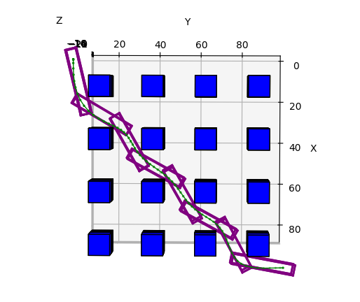
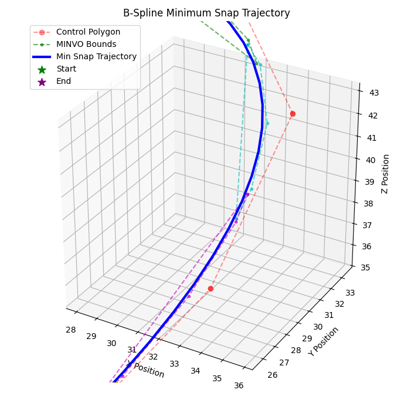
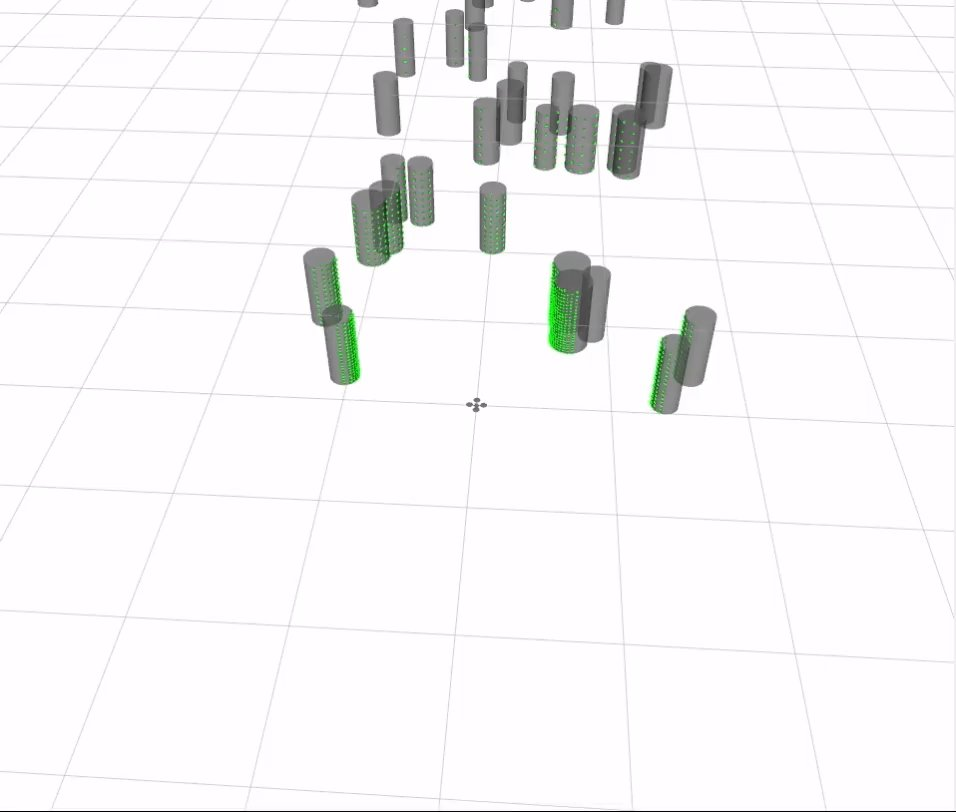
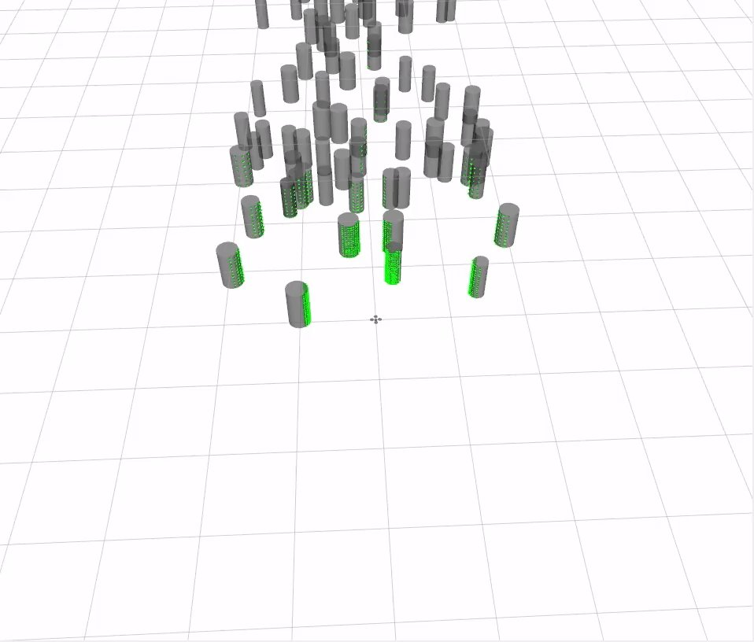

BYU MAGICC Lab · Feb 2026 – Present
COAST: Corridor-Optimized Aerially-Safe Trajectories
A real-time path and trajectory planner for UAVs that keeps the obstacle-avoidance guarantees of safe flight corridors while running fast enough to replan in flight.
Alejandro Pelaez & Randal W. Beard · Submitted to the 2027 American Control Conference (ACC) · 2nd Place, SHPE 2026 National Poster Competition

Motivation
An online trajectory planner decides how an aircraft physically gets from A to B using only its onboard sensors. Existing planners tend to pick one side of a trade-off: some give mathematical guarantees at the expense of computation time, while others are fast but give up those guarantees. COAST is built to get both: a highly efficient planner that provably respects obstacle boundaries.
Approach
- Safe flight corridors. The trajectory is constrained to a chain of rectangular prisms that are proven to be obstacle-free.
- Time-parameterized B-splines. B-splines are differentiable, so velocity and acceleration come straight from the control points. Their convex-hull property means that if the control points stay inside a corridor, the whole curve does too.
- MINVO bounds. Converting the control points to a minimum-volume (MINVO) basis gives tighter, less conservative bounds on velocity and acceleration than the raw control polygon.
- Snap minimization. A quadratic program (OSQP) minimizes snap subject to the corridor and dynamic constraints. Simple bounds and matrix B-spline representations keep it fast.


Pipeline
Multirotors use dynamically resized corridors for cluttered and indoor flight. Fixed-wing aircraft use fixed-size corridors with obstacles expanded to account for turn radius.
Results
Benchmarked in simulation with LiDAR point clouds in RViz, in forests of randomly placed obstacles at 5% and 10% density:


| Density | Success | Optimize (ms) | Replan (ms) | Travel time (s) | Path length (m) | Jerk (m/s³) | Vel. / accel. violations |
|---|---|---|---|---|---|---|---|
| 5% | 100% | 0.89 | 2.46 | 47.48 | 109.79 | 64.58 | 0% / 0% |
| 10% | 90% | 1.10 | 4.25 | 50.16 | 119.68 | 129.20 | 0% / 0% |
Optimization takes about 1 ms and full replanning under 5 ms, with no velocity or acceleration constraint violations at either density.
Next steps
- Release COAST as a pip-installable open-source library, and possibly a ROS package
- Extensive hardware flight tests indoors and outdoors
- Head-to-head comparisons against other state-of-the-art planners
- Extend the ACC paper into a journal publication